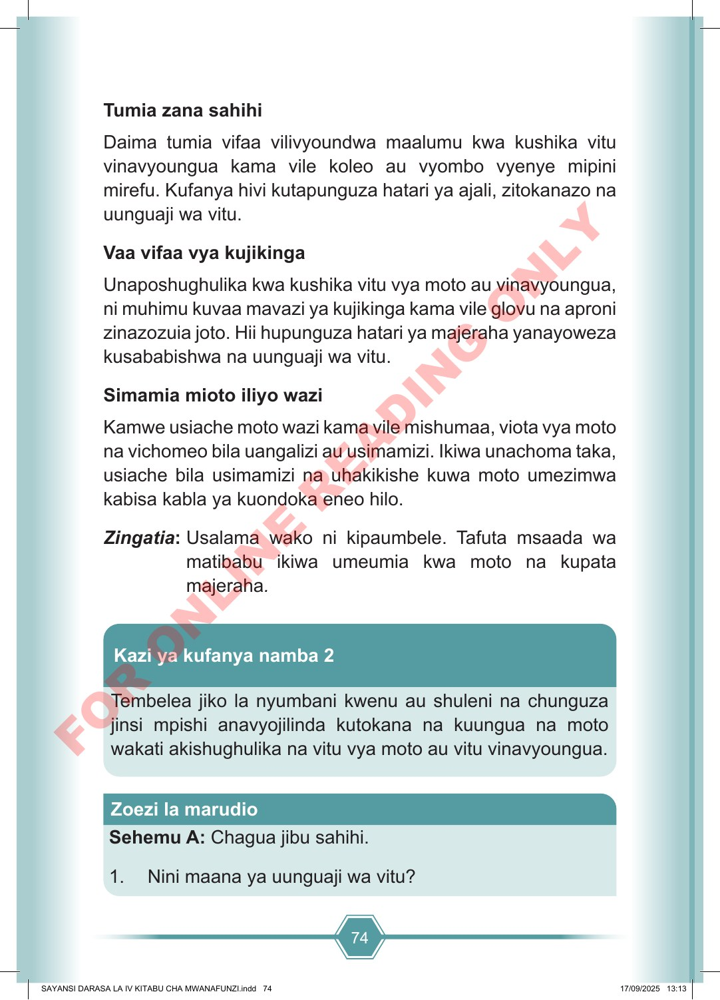

74 Tumia zana sahihi Daima tumia vifaa vilivyoundwa maalumu kwa kushika vitu vinavyoungua kama vile koleo au vyombo vyenye mipini mirefu. Kufanya hivi kutapunguza hatari ya ajali, zitokanazo na uunguaji wa vitu. Vaa vifaa vya kujikinga Unaposhughulika kwa kushika vitu vya moto au vinavyoungua, ni muhimu kuvaa mavazi ya kujikinga kama vile glovu na aproni zinazozuia joto. Hii hupunguza hatari ya majeraha yanayoweza kusababishwa na uunguaji wa vitu. Simamia mioto iliyo wazi Kamwe usiache moto wazi kama vile mishumaa, viota vya moto na vichomeo bila uangalizi au usimamizi. Ikiwa unachoma taka, usiache bila usimamizi na uhakikishe kuwa moto umezimwa kabisa kabla ya kuondoka eneo hilo. Zingatia: Usalama wako ni kipaumbele. Tafuta msaada wa matibabu ikiwa umeumia kwa moto na kupata majeraha. Tembelea jiko la nyumbani kwenu au shuleni na chunguza jinsi mpishi anavyojilinda kutokana na kuungua na moto wakati akishughulika na vitu vya moto au vitu vinavyoungua. Kazi ya kufanya namba 2 Sehemu A: Chagua jibu sahihi. 1. Nini maana ya uunguaji wa vitu? Zoezi la marudio SAYANSI DARASA LA IV KITABU CHA MWANAFUNZI.indd 74 SAYANSI DARASA LA IV KITABU CHA MWANAFUNZI.indd 74 17/09/2025 13:13 17/09/2025 13:13 F O R O N L I N E R E A D I N G O N L Y